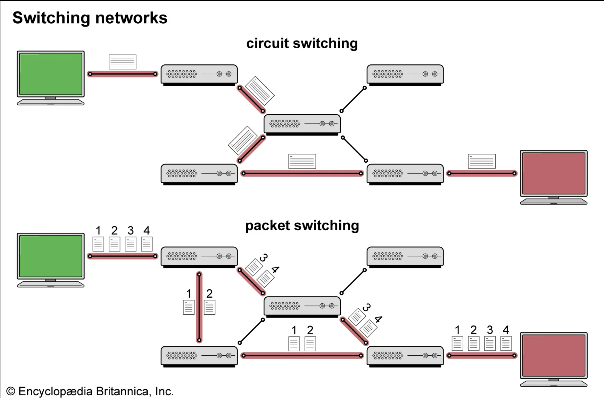

Packet switching is the main computing invention that allowed programmers to create the internet. Packet switching is simply the way some object or data is transfered between two endpoints 1 . The main idea of packet switching in computing is to break up some amout of data into smaller parts or packets and send it accross the network. Each individual packet does not travel across the same route between endpoints, rather each packet travels the best route to take to the endpoint which can change between packets. The packets travel through nodes and the current node decides which next node is best to send the packet to.
 2A simpler idea of this that we many know is how the United States Postal System works. When you send a package through the mail or go into the post office that is like sending a packet to a node with a destination. At each post office that your package goes through the office decides where next is best to send the package and it is not always the same. For instance if there was a large storm near one post office and mail cannot get there your package goes to a different office. This repeats until the package reaches it destination or endpoint.
2. Hillstrom 9
2. Volle